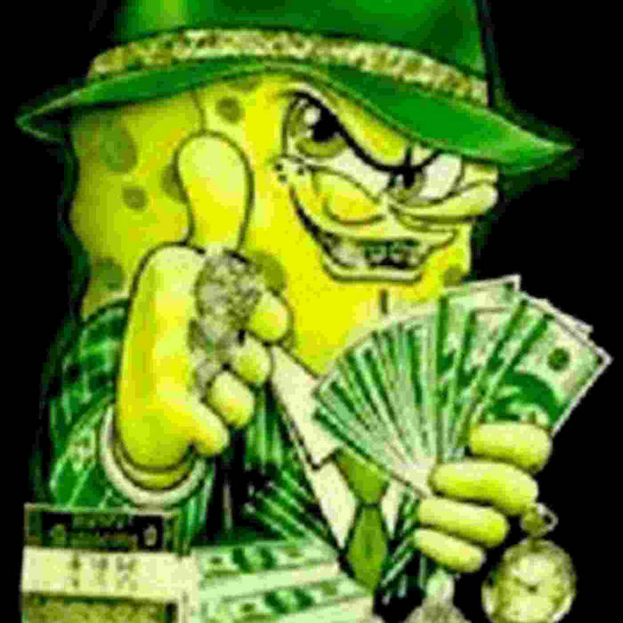

About


Care este mancarea ta preferata?
A mea este fructul portocaliu numit portocala.
Education
I finished my high school education at Alexandru Marghiloman High School in Buzau after 4 years.
I am currently a student at Transilvania University of Brasov, Faculty of Computer Engineering and Computer Science.
I am in year 2 of study.
My favourite courses so far are Programming, Data Structures and Algorithms, Signals and Systems, Analog Electronics, Digital Electronics.
The first course that really caught my attention was Programming since I've shown an interest in it since highschool.
Data Structures and Algorithms is a course that I find very interesting because it helps me understand how to solve problems efficiently and digs deeper what i learned in the programmng course.